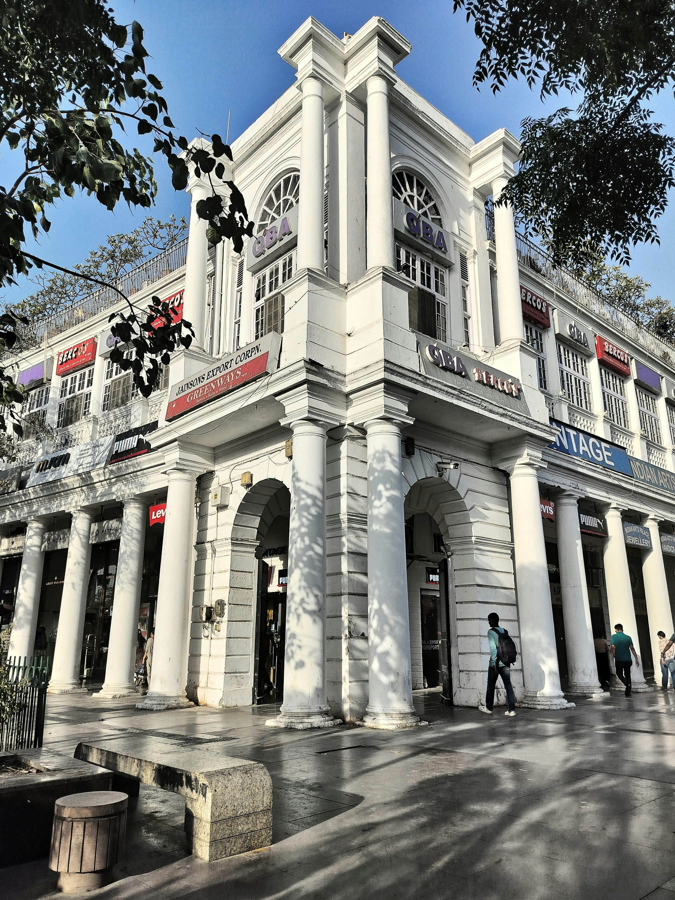
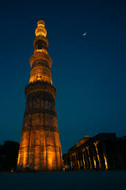
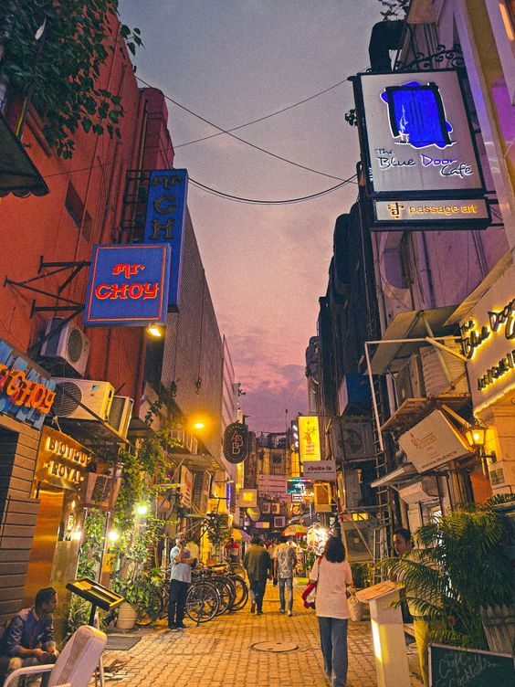
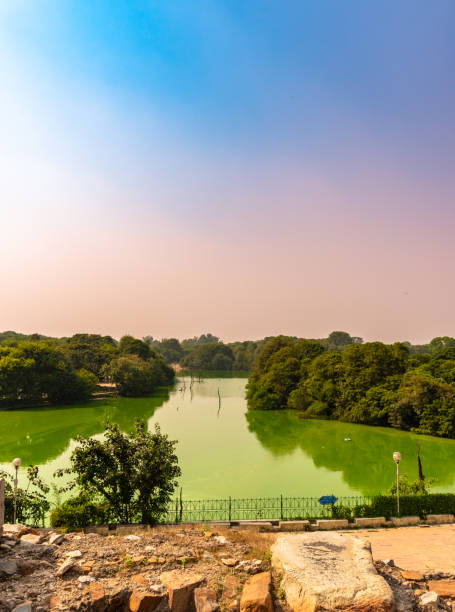

The future belongs to those who believe in the beauty of their dreams.
The National Capital Region (NCR) is a sprawling metropolitan area centered around Delhi, India's capital. Established in 1985, it aims to manage Delhi's growth by integrating surrounding districts from Haryana, Uttar Pradesh, and Rajasthan into a planned development zone. This unique inter-state region facilitates balanced urbanization and economic expansion.
5 main attraction in NCR
-
Connaught Place

Connaught Place, affectionately known as "CP," is the bustling heart of New Delhi. A masterpiece of Georgian architecture, it was designed by Robert Tor Russell and completed in 1933. Named after the Duke of Connaught, it's now officially called Rajiv Chowk. The circular marketplace is a major commercial hub, with concentric circles housing a blend of high-end international brands, local shops, and popular restaurants. CP is also known for its vibrant atmosphere, with Central Park at its core, as well as nearby attractions like Palika Bazaar, Janpath Market, and historic sites like Jantar Mantar.
-
INDIA Gate

India Gate is a prominent war memorial located in the heart of New Delhi, India. Designed by Sir Edwin Lutyens, it was built to honor the 70,000 Indian soldiers who died fighting for the British Army during World War I and the Third Anglo-Afghan War. The 42-meter-high archway, made of red and yellow sandstone, resembles the Arc de Triomphe in Paris. 🇫🇷 The names of over 13,000 British and Indian soldiers are inscribed on its walls. Following India's independence, the Amar Jawan Jyoti (the flame of the immortal soldier) was added to the monument in 1972 to honor Indian soldiers who sacrificed their lives in the Indo-Pakistan War of 1971. In 2022, this eternal flame was merged with the eternal flame at the newly built National War Memorial. India Gate stands at one end of the Kartavya Path (formerly Rajpath) and is a popular spot for locals and tourists alike, who enjoy the surrounding lawns and an evening stroll.
-
Qutub Minar

The Qutub Minar is a towering minaret located in the Mehrauli area of Delhi, India, and is a UNESCO World Heritage Site. Standing at 73 meters tall, it is the world's tallest brick minaret. Construction began in 1192 by Qutub-ud-din Aibak, the founder of the Delhi Sultanate, to commemorate his victory over the Rajputs. The minaret was subsequently expanded and completed by his successors, Iltutmish and Ala-ud-din Khilji. The intricate carvings and verses from the Quran adorning its five distinct storeys showcase a blend of Indo-Islamic architecture. The complex also includes several other historical structures, such as the Quwwat-ul-Islam Mosque, the first mosque built in Delhi, and the Iron Pillar, a metallurgical marvel from the 4th century CE that has remained rust-free for over 1600 years. The Qutub Minar is a popular tourist attraction and a testament to the rich cultural and architectural history of medieval India.
-
Khan Market

Khan Market is an upscale shopping destination and one of the most expensive retail locations in India, situated in the heart of New Delhi. Established in 1951, it was originally created as a rehabilitation market for refugees who migrated from the North-West Frontier Province after the Partition of India. The market is named after Khan Abdul Jabbar Khan, a prominent Pashtun leader who helped many of these refugees. Today, its "U" shaped layout and surrounding lanes are home to a mix of high-end boutiques, renowned bookstores, designer stores, and a wide variety of restaurants and cafes. It is a popular haunt for diplomats, expatriates, and Delhi's elite, known for its curated collection of international and Indian brands, gourmet food options, and vibrant nightlife. Despite its modern, sophisticated feel, the market retains a certain charm and is a testament to the city's ability to blend history with contemporary culture.
-
Hauz Quaz

Hauz Khas is a unique neighborhood in South Delhi that seamlessly blends a medieval history with a trendy, modern vibe. The name "Hauz Khas" translates to "royal tank" in Persian, a nod to the large water reservoir built by Sultan Alauddin Khilji in the 13th century to supply water to the nearby Siri Fort. The area's main attraction is the Hauz Khas Complex, which surrounds the tranquil lake and features architectural marvels from the Delhi Sultanate era, including the tomb of Firuz Shah Tughlaq, a madrasa (Islamic school), and a mosque. Today, the village area adjacent to the complex is a hub for art galleries, designer boutiques, and a plethora of restaurants and cafes, making it a popular destination for both history enthusiasts and those seeking a lively urban experience. The complex itself, with its sprawling lawns and picturesque ruins, offers a serene escape, especially at sunset, and is a favorite spot for photographers and nature lovers.